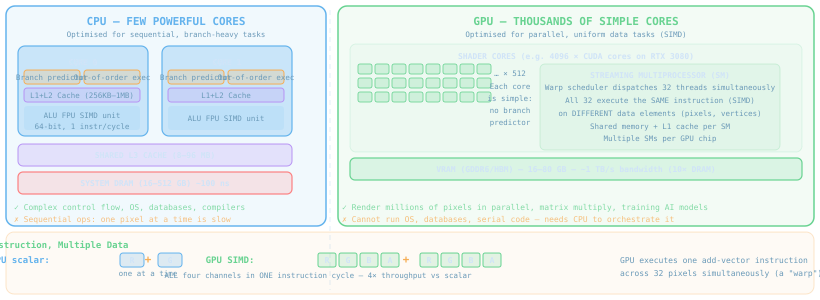
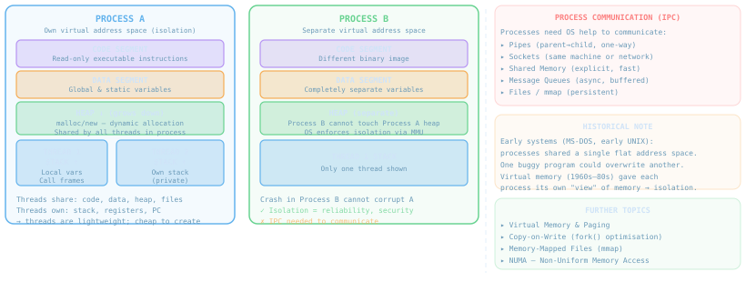
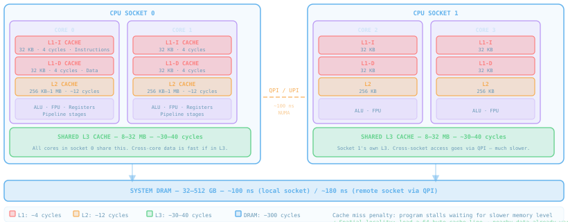
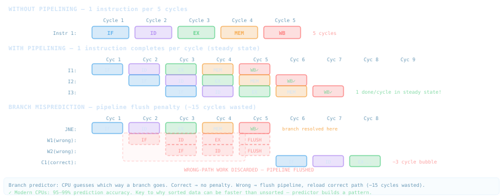
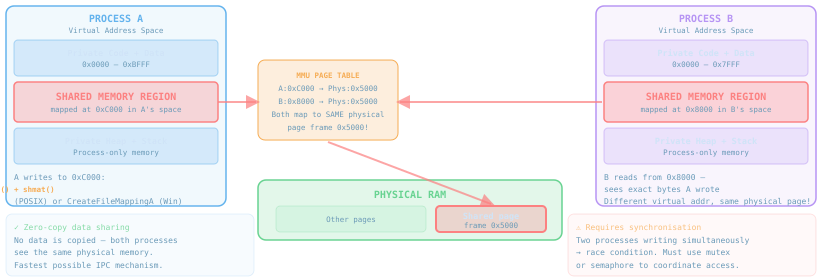
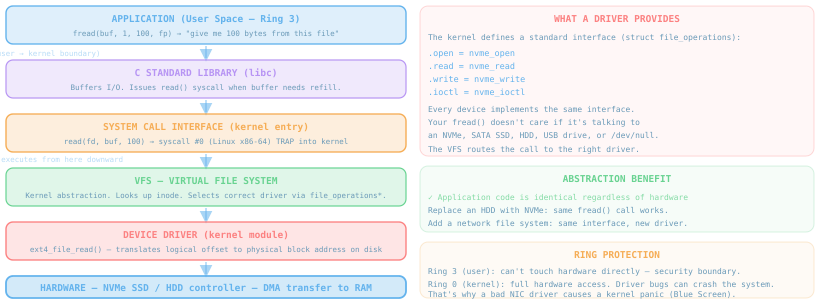
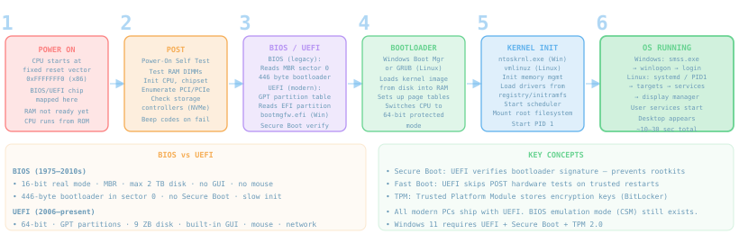
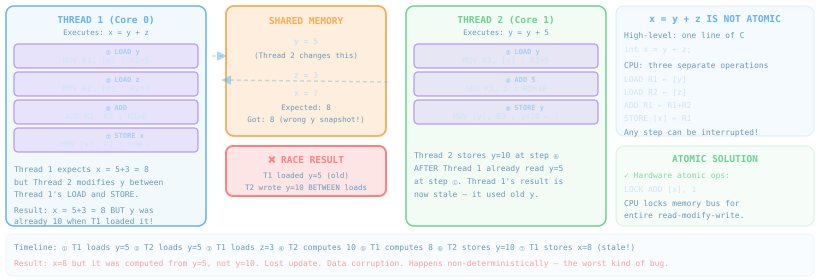

Systems Fundamentals
From transistors and SIMD to pipelines and semaphores — the operating system, hardware, and concurrency concepts every software engineer must understand to reason about the machines their code runs on.
CPU vs GPU
A CPU has a few powerful, flexible cores optimised for sequential branchy logic. A GPU has thousands of tiny, simple cores optimised for one thing: running the same instruction on massive amounts of data simultaneously — SIMD.

- 4–128 cores; each has branch predictor, out-of-order execution, large caches
- Can run any code: OS kernel, database, compiler, game engine logic
- Handles complex control flow —
if/elsechains, recursive calls, I/O waits - Executes instructions that depend on the result of the previous one (serial dependencies)
- Thousands of shader cores; each is simple — no branch predictor, tiny cache
- Works when all threads do the same thing (divergence = stall)
- Ideal: render 1920×1080 = 2 million pixels, all computed identically in parallel
- Cannot run an OS — it has no ability to handle interrupts, syscalls, or arbitrary branching
- Requires a CPU to orchestrate: load data, dispatch work, collect results
- CPU also has SIMD units (SSE, AVX, NEON) — processes 4–16 values per instruction
- GPU SIMD is extreme — a "warp" of 32 threads execute the same instruction simultaneously on 32 different pixels
- AI training = giant matrix multiplications = perfectly uniform data → GPU 100–1000× faster than CPU
- GPUs cannot replace CPUs — but CPUs can simulate GPU work (just very slowly)
RISC vs CISC vs ARM
Instruction Set Architecture (ISA) is the contract between hardware and software. CISC packs complex operations into single instructions; RISC uses simple, uniform instructions executed very fast. ARM is RISC for power-constrained devices.
| Property | CISC (x86/x64) | RISC (SPARC, MIPS, POWER) | ARM (RISC variant) |
|---|---|---|---|
| Instruction count | Thousands of complex opcodes | ~100 simple uniform ops | ~200 (Thumb-2 adds compact 16-bit ops) |
| Instruction length | Variable 1–15 bytes | Fixed 4 bytes | Fixed 4B (32-bit) or 2B (Thumb) |
| Decoding complexity | Complex: x86 micro-op decode unit | Simple: one cycle decode | Simple; pipeline-friendly |
| Registers | x86: 8 general (legacy); x64: 16 | 32–256 general-purpose | 16 (AArch32) / 31 (AArch64) |
| Memory access | Many instrs operate on memory directly | Load/Store only — RISC principle | Load/Store (RISC principle) |
| Clock freq. | 3–6 GHz (complex pipeline) | 1–4 GHz (simpler pipeline) | 1–3.5 GHz mobile; up to 4 GHz Apple M |
| Power | High (65–280W TDP) | Medium–high (server workloads) | Low–medium (0.5–15W mobile) |
- Intel 8086/8088 (1978) — birth of x86
- Intel 486, Pentium (1989–93) — desktop dominance
- Intel Core i9-14900K — current flagship desktop
- AMD Ryzen 9 7950X — 16-core x86-64 workstation
- Intel Xeon / AMD EPYC — server CPUs, up to 96 cores
- MIPS R3000 (1988) — PlayStation 1 CPU; taught in every architecture course
- Sun SPARC (1987) — powered Sun workstations and servers
- IBM POWER10 — mainframe and HPC (still shipping)
- RISC-V (2010) — open ISA; SiFive, StarFive; growing fast
- DEC Alpha (1992–2004) — fastest CPU of its era
- ARM6 (1991) — Apple Newton PDA; birth of mobile ARM
- ARM Cortex-A53 — Raspberry Pi 4; billions of IoT devices
- Qualcomm Snapdragon 8 Gen 3 — Android flagship phones
- Apple A17 Pro / M3 Ultra — iPhone 15 Pro / Mac Studio
- AWS Graviton4 — ARM server CPU; 30% better perf/$ than x86
- NVIDIA Tegra — Nintendo Switch
Processes vs Threads
A process is an isolated execution environment with its own memory space. Threads live inside a process and share its memory — faster to create but requiring careful coordination.

- MS-DOS (1981): single-tasking, one program at a time, flat memory — no protection
- Early UNIX (1969): processes shared kernel space; early bugs could corrupt other processes
- Virtual memory (late 1960s, mainstreamed 1980s): MMU maps each process's virtual addresses to different physical pages — the OS enforces isolation in hardware
- Today: a crash in Process B cannot corrupt Process A — the MMU prevents it
- Process creation: fork() copies page tables, file descriptors — microseconds to milliseconds
- Thread creation: allocates new stack only — typically <1 µs
- Context switch (process): flush TLB, switch page tables — expensive (~µs)
- Context switch (thread): save/restore registers only — cheap
- Communication between processes requires IPC (pipes, sockets, shm); threads just read shared variables
- Virtual Memory — how each process sees a full 64-bit address space
- Paging & Page Tables — how virtual→physical mapping works
- Copy-on-Write (fork) — why fork() is fast despite "copying" all memory
- NUMA — non-uniform memory access on multi-socket servers
- Green Threads / Goroutines — user-space threads managed by a runtime
Pre-emptive Multitasking vs Event Loop
How does one CPU appear to run many programs simultaneously? Two very different historical answers — cooperative yielding (old) and pre-emptive interruption (modern).
- Used by: Windows 3.x (1990–95), early Mac OS, DOS TSRs, Node.js (single-threaded)
- A running program voluntarily yields the CPU — it calls a "yield" or handles an event and returns control
- If one program hangs in a tight loop — the whole system freezes. No other app runs.
- Event loop (Node.js): single-threaded; all I/O is async; callbacks fire when I/O completes; never blocks the loop
- Works well when all operations are non-blocking. Fails badly with any CPU-bound work.
- Used by: Windows NT/XP/10/11, Linux, macOS, Android, iOS
- A hardware timer fires at ~100–1000 Hz → CPU raises an interrupt → OS scheduler runs
- Scheduler picks the next thread to run (round-robin, priority, CFS) and forcibly switches
- The running program has no say — it is stopped mid-instruction if its time slice expires
- A hung process cannot starve the system — the scheduler interrupts it after its timeslice
- Each thread gets a time quantum (~1–10 ms); I/O-blocked threads sleep and are woken by interrupt when data arrives
// Old cooperative model (simplified)
while (true) {
event = getNextEvent(); // yields here
if (event == PAINT) doPaint();
if (event == CLICK) doClick();
// ↑ must return quickly!
// A slow doClick() freezes UI
}// Thread just runs — OS will
// interrupt it when timeslice ends
void myThread() {
while (true) {
doWork(); // runs freely
// ← OS may preempt here
doMoreWork(); // resumes later
}
}Hyperthreading — Two Threads Per Core
A CPU core is rarely 100% busy — it spends time waiting for cache misses, memory, and instruction dependencies. Hyperthreading (Intel's name for SMT — Simultaneous Multi-Threading) fills those idle cycles with a second thread.
- One physical core has two sets of architectural registers — it appears to the OS as two logical CPUs
- Both threads share: ALU, FPU, L1/L2 cache, branch predictor, execution ports
- When Thread A stalls waiting for a cache miss, the core's execution units process Thread B's instructions instead
- No idle cycles wasted — the hardware automatically interleaves without any OS involvement
- A 12-core Intel Core i9 appears to the OS as 24 logical cores
- Typical throughput gain: 15–30% — not 2× because threads compete for the same execution units
- Best for: mixed workloads (some threads waiting on I/O or memory while others compute)
- Worst for: two CPU-intensive threads — they compete for the same ALU ports and cache, sometimes hurting each other
- AMD equivalent: SMT (Simultaneous Multi-Threading) — same concept, different branding
- ARM: SMT optional, present in some Cortex-X cores and Apple Firestorm
- Meltdown/Spectre (2018): HT can leak data between logical threads — some servers disable it
Heap vs Stack
A process's memory is divided into regions. The stack handles function calls — automatic, LIFO, fast. The heap handles dynamic allocation — flexible, any lifetime, but requires explicit management. The animation below shows stack frames being pushed and popped as functions call each other.

- Allocated when a function is called; freed when it returns — automatically, with zero overhead
- Contains: return address, saved registers, local variables, function arguments (by value)
- Size is fixed at thread creation (typically 1–8 MB)
- Stack overflow: deep recursion exhausts the stack → segfault
- Allocation = one
SUB RSP, Ninstruction (move stack pointer) — nanoseconds
malloc(n)/newallocates a block;free()/ GC releases it- Can allocate any size; object lives until explicitly freed (C) or until no references remain (GC)
- Shared by all threads in the process — requires synchronisation for concurrent allocation
- Fragmentation over time — memory allocator must track free blocks
- Slower than stack: allocator must search free list, may call
sbrk()/mmap to get more pages
- Stack overflow:
void f() { f(); }— infinite recursion; OS sends SIGSEGV - Heap leak:
mallocwithoutfree— memory consumed until OOM crash - Use-after-free: read/write a pointer after
free()— undefined behaviour, security exploit - Double-free:
free(p)twice — corrupts heap metadata - Buffer overflow: write past end of a stack array → overwrite return address → code execution
Pass by Value vs Pass by Reference
Does a function receive a copy of a variable or a pointer to it? The answer determines whether the function can modify the caller's data — and the answer differs between languages.
/* By VALUE — function gets a copy */
void addTen_val(int x) {
x += 10; // only local copy changes
}
/* By REFERENCE — function gets pointer */
void addTen_ref(int *x) {
*x += 10; // caller's variable changes!
}
int main() {
int a = 5;
addTen_val(a); // a still = 5
addTen_ref(&a); // a now = 15 !
}// Primitives: always by value
void addTen(int x) {
x += 10; // caller's int unchanged
}
// Objects: reference is passed by value
// The reference copy still points to
// the SAME object — mutations visible!
void grow(List<String> list) {
list.add("item"); // caller sees this!
list = new ArrayList<>(); // rebind: invisible to caller
}
// Java NEVER has pointer syntax (&, *)
// but mutable objects feel like pass-by-refvoid f(int x)— pass by value (copy)void f(int &x)— pass by reference (alias)void f(int *x)— pass pointer (explicit address)void f(const int &x)— const ref: read-only, no copy
- All variables are references to objects
- Immutable (int, str, tuple): rebinding inside function doesn't affect caller
- Mutable (list, dict): mutations inside function are visible to caller
def f(lst): lst.append(1)— caller's list growsdef f(lst): lst = []— caller's list unchanged (rebind)
- Pass by value: the value is copied onto the callee's stack frame
- Pass by reference/pointer: the address is placed on the stack frame
- Large structs: pass by reference to avoid copying megabytes onto the stack
- This connects directly to the stack diagram on the previous slide —
aandbinadd()were copies ofxandy
L1 / L2 / L3 Cache
DRAM takes ~300 clock cycles to deliver data. The CPU would stall constantly if it always fetched from RAM. Cache hierarchies solve this by keeping recently-used data in progressively faster, smaller memories closer to the core.

- Spatial locality: if you access address X, you'll likely access X+1 soon. Cache loads a 64-byte cache line at once — neighbouring data is already warm.
- Temporal locality: recently accessed data is likely to be accessed again soon — keep it in cache.
- Array traversal exploits both — sequential access pattern → L1 hit rate near 100%
- Random access (hash table) destroys locality → frequent L3 misses → 300× slower
- In a dual-socket server, each socket has its own RAM bank connected directly to it
- Socket 0 accessing its own RAM: ~100 ns (local)
- Socket 0 accessing Socket 1's RAM: ~180 ns (remote, via QPI/UPI interconnect)
- OS NUMA-aware schedulers try to place threads on the socket near their data
- Database engines (PostgreSQL, Oracle) are NUMA-aware for this reason
- Two threads on different cores, each writing their own variable — but both variables happen to sit in the same 64-byte cache line
- Every write by Thread A invalidates Thread B's copy of the cache line — even though they're writing different bytes
- Solution: pad structs so each thread's data is in a different cache line
- False sharing is a common cause of parallel code being slower than sequential
Pipeline & Branch Miss
Modern CPUs execute instructions in an assembly-line pipeline — multiple instructions in different stages simultaneously. Branch misprediction flushes the pipeline, wasting 15–20 cycles of speculative work.

- IF — Instruction Fetch: load opcode from instruction cache
- ID — Instruction Decode: identify operation and source registers
- EX — Execute: ALU/FPU performs the operation
- MEM — Memory Access: load/store to data cache if needed
- WB — Write Back: store result into register file
- Modern CPUs have 14–20 stages (deeper pipeline = higher clock speed possible, higher branch penalty)
- CPU guesses which way an
if/forbranch goes and speculatively fetches/executes those instructions - Correct: no penalty — work was already done
- Wrong (misprediction): flush pipeline, discard speculative work, restart from correct branch — ~15 cycle penalty at 3 GHz ≈ 5 ns wasted
- Modern CPUs: 95–99% accuracy using branch history tables
- Why sorted arrays are faster: predictable branch pattern (always taken, then always not-taken) → predictor learns it
- CPU doesn't wait — it executes instructions out of program order when dependencies allow
- If instruction 5 doesn't depend on instruction 4, execute both in parallel
- Spectre/Meltdown (2018): speculative execution could read memory that shouldn't be accessible — speculatively executed work leaves traces in cache timing
- Mitigations added performance overhead; why some cloud VMs saw 5–30% slowdown post-patch
Shared Memory Between Processes
Processes are isolated by design — but sometimes two separate programs need to exchange large amounts of data without copying. The OS can map the same physical RAM page into two different processes' virtual address spaces — zero-copy, fastest possible IPC.

shm_open()— create or open a named shared memory objectftruncate()— set the size of the shared regionmmap()— map it into the process's virtual address space- Process B: same
shm_open()call with same name → same physical pages shm_unlink()— remove the named object when done
CreateFileMapping(INVALID_HANDLE_VALUE, ...)— creates a named mapping object backed by paging fileMapViewOfFile()— maps it into the calling process's address space- Second process:
OpenFileMapping()+MapViewOfFile() - Used heavily by Windows for DLL sharing and inter-process communication
- Two processes writing simultaneously = race condition — corrupt data guaranteed
- Must use a mutex or semaphore (can be created in shared memory too) to serialise access
- POSIX:
pthread_mutex_tin shared memory withPTHREAD_PROCESS_SHAREDattribute - Without synchronisation, shared memory is a reliable way to create subtle, non-reproducible bugs
Device Drivers — Hardware Abstraction
A device driver is kernel code that speaks the hardware's language and exposes a standard interface to the rest of the kernel. Application code never touches hardware — it calls library functions which make system calls which route through the VFS to the appropriate driver.

- Every piece of hardware speaks a different protocol — NVMe, SATA, USB, PCIe, I2C, SPI all differ completely
- A driver translates between the hardware's specific commands and the kernel's standard
file_operationsinterface - Application sees:
fread(),fwrite(),ioctl()— always the same API - New hardware just needs a new driver — no application code changes
- Character device: serial port, keyboard, mouse — byte stream, no random access
- Block device: HDD, SSD, USB drive — random access by block number; has a request queue
- Network driver: NIC — different interface (not file_operations); uses socket buffers (skb)
- Virtual drivers:
/dev/null,/dev/zero,/dev/random— no real hardware, pure kernel logic
- Drivers run in Ring 0 — kernel mode — no memory protection around them
- A null pointer dereference in a driver immediately crashes the entire OS (Linux: kernel panic; Windows: Blue Screen of Death)
- ~70% of Linux kernel CVEs are in device drivers
- Windows kernel crashes: most are caused by third-party graphics or antivirus drivers running in Ring 0
- Solution: User-space drivers (FUSE, DPDK, io_uring) move drivers out of Ring 0
The Boot Process — BIOS & UEFI
When you press the power button, the CPU starts executing from a fixed ROM address before RAM has even been initialised. Six distinct phases take the machine from cold silicon to a running operating system.

- BIOS: 16-bit real mode; MBR partition; max 2 TB disk; text-only setup; no Secure Boot; ~1975–2010s
- UEFI: 64-bit protected mode from the start; GPT partitions; >9 ZB disk; GUI setup with mouse; Secure Boot; Fast Boot; TPM integration
- Windows 11 requires: UEFI + Secure Boot + TPM 2.0
- UEFI can run a small OS before the main OS — useful for recovery environments
- UEFI → reads EFI system partition → loads
bootmgfw.efi - Windows Boot Manager presents OS selection menu
- Loads
winload.efi→ loadsntoskrnl.exe(kernel) +hal.dllinto RAM - Kernel initialises: memory manager, I/O manager, object manager, security
- Loads boot-start drivers from registry
smss.exe→csrss.exe→winlogon.exe→ login screen
- UEFI/BIOS → GRUB2 bootloader → loads
vmlinuz+initramfsinto RAM - Kernel decompresses itself, initialises hardware, mounts initramfs as temporary root
- Initialises devices using
initramfsdrivers → mounts real root filesystem - PID 1 =
systemd— starts all other services in parallel based on dependencies - Targets: basic.target → multi-user.target → graphical.target
- Login manager (GDM/SDDM) starts → desktop appears
Atomic Operations & Race Conditions
A single line of high-level code compiles to multiple CPU instructions. If two threads interleave between those instructions on shared data, the result is a race condition — non-deterministic data corruption that is notoriously hard to reproduce and debug.

- The compiler expands
x = y + zto: LOAD y, LOAD z, ADD, STORE x — four separate instructions - The OS can preempt a thread between any of these instructions and run another thread
- If the other thread modifies
yorzduring that window — the result is wrong - The bug is non-deterministic: it occurs only when the preemption happens during the critical window, which varies with load, CPU speed, and timing
LOCK ADD [x], 1— x86 prefix; CPU locks memory bus for the entire read-modify-writeCMPXCHG— Compare-and-Swap (CAS): "if memory == expected, store new value" — atomically- ARM:
LDREX/STREX— load-link/store-conditional exclusive pair - CAS is the foundation of all lock-free data structures
- C++ std::atomic<int>:
x.fetch_add(1)— guaranteed atomic increment - Java java.util.concurrent.atomic:
AtomicInteger.incrementAndGet() - Go sync/atomic:
atomic.AddInt64(&x, 1) - Python: the GIL makes individual bytecode operations atomic — but not sequences
- Atomics are fast (no OS involvement) but only work for single variable operations — complex invariants require a mutex
Mutex · Semaphore · Spinlock
When multiple threads or processes access shared data, they must take turns. Three fundamental synchronisation primitives enforce ordering — each with different use cases, performance profiles, and failure modes.
- Binary: locked or unlocked — only one thread holds it at a time
- Ownership: only the thread that locked it can unlock it
- Thread tries to lock → already locked → thread is put to sleep by OS → woken when lock is released
- No CPU burned while waiting — efficient for long waits
- Deadlock: Thread A holds mutex1, waits for mutex2; Thread B holds mutex2, waits for mutex1 → both wait forever
- Fix: always acquire mutexes in the same order across all threads
- Counting: allows N threads through simultaneously (a mutex is a semaphore with N=1)
sem_wait()— decrement count; if 0, blocksem_post()— increment count; wake one waiter- No ownership: any thread can signal — useful for producer/consumer
- Use case: connection pool with 10 slots — initialise semaphore to 10; each connection decrements; release increments
- Binary semaphore (count=1) can replace a mutex but lacks the ownership guarantee
- Thread loops in a tight CAS loop until the lock is available — never sleeps
- Pros: no OS context switch overhead; perfect for critical sections that complete in nanoseconds
- Cons: wastes CPU cycles while waiting — if the hold time is long, a sleeping mutex is far better
- Used in OS kernel code, real-time systems, lock-free data structures
- Rule: use a spinlock only when the critical section is shorter than the cost of a context switch (~1–5 µs)
- On single-core: spinlock without preemption = deadlock! The spinning thread prevents the lock-holder from running.
| Primitive | Waiting behaviour | Ownership | Count | Best for |
|---|---|---|---|---|
| Mutex | Sleep (OS blocks thread) | Yes — locker must unlock | Binary (0 or 1) | Protecting data structures; hold >~1 µs |
| Semaphore | Sleep (OS blocks thread) | No — any thread can post | 0 to N | Signalling; rate limiting; producer/consumer |
| Spinlock | Busy-wait (CAS loop) | Yes (in kernel implementations) | Binary | Kernel critical sections; hold <~1 µs |
| RWLock | Sleep (writers block readers) | Yes | Multiple readers / 1 writer | Read-heavy data (many reads, rare writes) |
Questions?
Let's Discuss.
These topics form the bedrock of systems programming. Every database, operating system, web server, and game engine is built on these primitives. Understanding them is what separates a developer who can use a system from one who can reason about why it behaves the way it does.